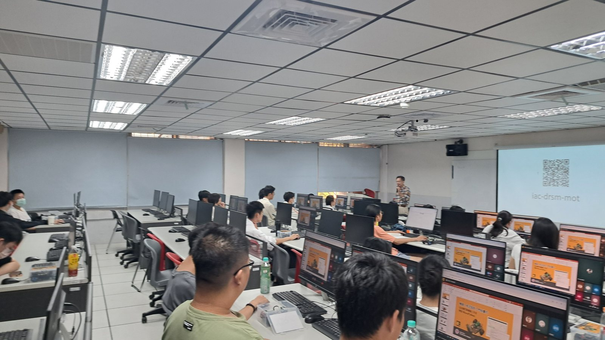
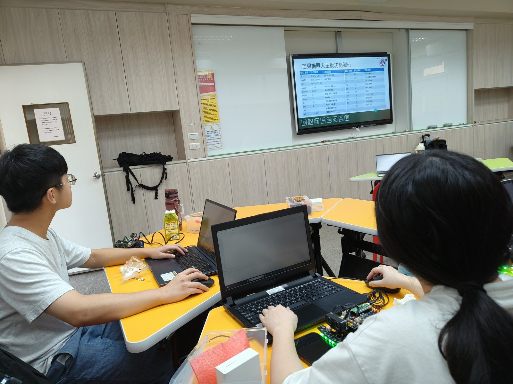

課堂情境以教師示範與學生跟做為主，適合用於 1 小時入門課程的授課安排。
Teacher Support
本頁是 `BootCamp` 主題下的教師支援模組。 它不是另一條課程，而是協助教師完成同一個主題的課前準備、示範順序、下載流程與內容邊界。
課堂情境以教師示範與學生跟做為主，適合用於 1 小時入門課程的授課安排。
Real Teaching Context
本區收錄與教學主線相符的課堂照片，用以呈現授課現場的實際樣貌。

教師可先在電腦教室進行全班示範，再讓學生分組練習，這樣最適合 1 小時入門課的節奏。

學生操作時需要同時看 Thonny 視窗與桌面上的小車，因此建議每組保留清楚的桌面空間。
Teacher Console
教師支援模組的任務是協助老師把同一個主題教得更穩，而不是額外再開一條新的內容線。
Real Equipment Setup
第一堂課以連線與鍵盤控制為主，因此先看真實小車、桌面與教室配置，比直接講腳位更符合教學需求。

備課時可先用這張照片向學生指出 Pico 板、感測器、輪子與連線位置，建立基本認識即可。
示範時只要確認電腦、Thonny、小車與連接線位置清楚，學生就能快速進入打字控制的環節。
若在電腦教室授課，建議先投影示範，再讓學生分組操作，可有效降低第一堂課的混亂感。
Before Class
In Class
先讓學生看到電腦真的能把指令送到車子，這是整堂課最重要的第一步。
先把前進、後退、左轉、右轉、停止操作熟，不需要同一堂課再帶更多功能。
這堂 BootCamp 的完成線，就是學生可以用鍵盤控制車子，不必再加感測器與循跡。
Download Order
After Class
此段影片可用於說明第一堂課完成基本控制後，後續可如何銜接循跡活動。

此張照片呈現循跡活動場景，可作為後續單元規劃的參考。

專題海報可用於展示課程後續成果，說明本課程可逐步發展為完整專題。